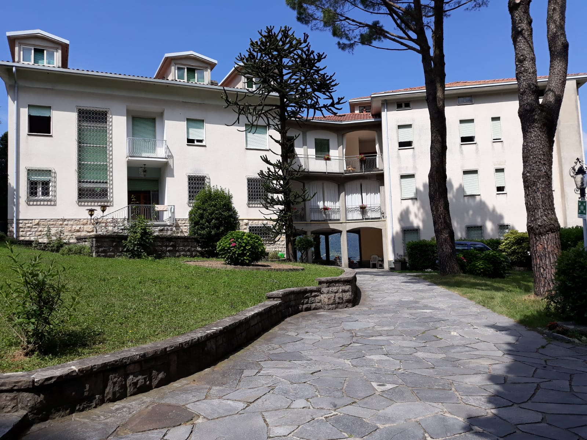

STORIA BREVE
La storia del santo devoto.
Un Padre Somasco, anni fa’, aveva scritto su una rivista:” I santi germogliano sempre!” E’ proprio vero! Essi sono sempre presenti in mezzo a noi e continuano a vivere in noi, facendo germogliare quel seme, che hanno gettato con tanto amore e dedizione, con polloni e rami nuovi. Così è del nostro caro Padre S. Girolamo. Il nostro Istituto delle Suore Somasche , Figlie di S. Girolamo Emiliani, può veramente definirsi un germoglio, nato dalla santità di S. Girolamo, perché è stato fondato da un Padre Somasco, Padre Gian Andrea Tiboldi, Parroco della Maddalena in Genova , nel lontano 1680. Chi era S. Girolamo? La Provincia di Bergamo in Lombardia, a nord dell’Italia, è una terra di predilezione, di santi. Venendo da Sotto il monte, villaggio natale del Santo Papa Giovanni XXIII, Angelo Roncalli, ci si avvicina al Lago di Lecco e lì, su una collina, spicca una chiesa , una basilica, dedicata proprio a S. Girolamo Emiliani, nel piccolo paese di Somasca, Comune di Lecco. Su questa terra benedetta è passato il nostro santo e lì, ha concluso la sua vita terrena. Sebbene fosse nato a Venezia ,la parte più significativa della sua vita l’ha trascorsa a Somasca, dove morì di peste ,contratta a causa del suo amore per il prossimo. Si può dunque definire : martire della carità. Diversi Istituti religiosi si ispirano alla sua spiritualità e fra questi ci siamo noi, Suore Somasche. Girolamo nacque a Venezia nel 1486 ,dalla famiglia patrizia dei Miani.
San Gerolamo

Santuario

Ingresso
